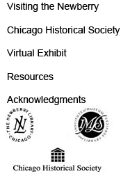

This exhibit was organized by the Newberry Library's Dr. William M. Scholl Center for Family and Community History and the Chicago Historical Society. It was made possible with major funding provided in part by The Institute of Museum and Library Services, a federal agency that fosters innovation, leadership and a lifetime of learning. Generous support was also provided by The Chicago Reader and Dr. and Mrs. Tapas K. Das Gupta. |
|  |
|
|
|
| text only | copyright 2004 The Newberry Library |